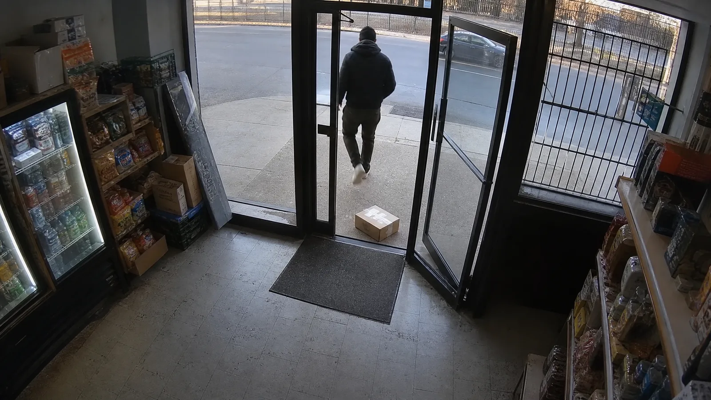
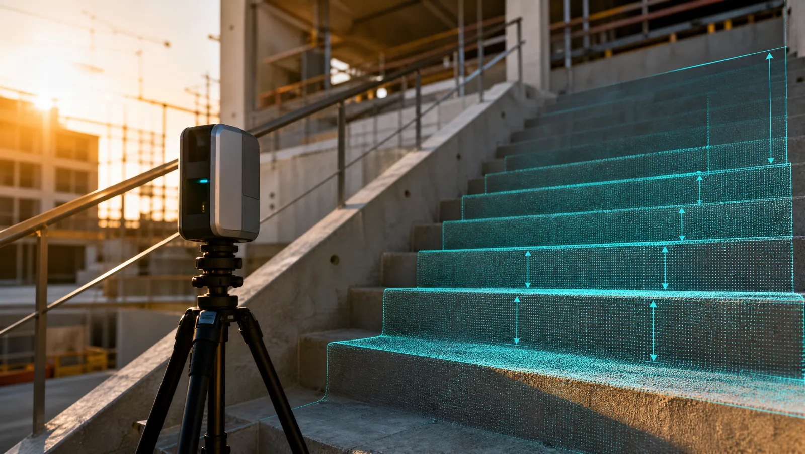
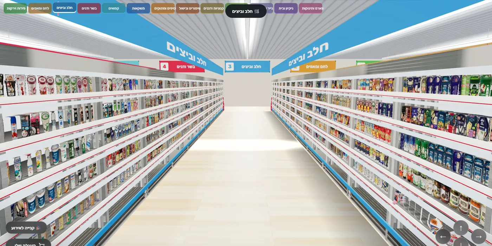
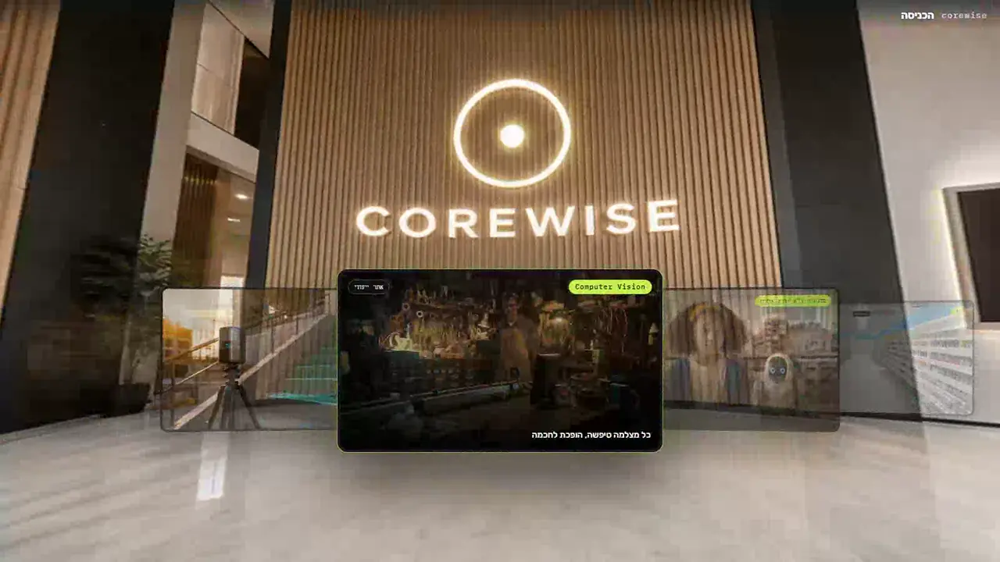
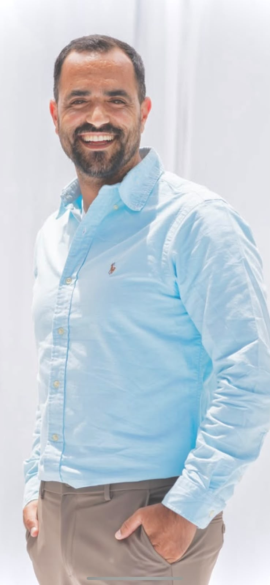

אריאל אוחיון מייסד ו-CTO
אחראי הפיתוח הראשי בקורוויז, מרצה ומוביל סדנאות. פתח את קהילת «קלוד ישראל» ביום שקלוד יצא כצ'אטבוט, היום 25 אלף איש, ומהראשונות בעולם.
הכל אצלנו בבית. ואנחנו נשארים עד שזה עובד.
בינה מלאכותית לבדה היא כבר צפויה. מה שמעניין מתחיל כשמחברים אותה למכונה, לחיישן, למדף, ומקבלים בחזרה מספר אמיתי.
אנחנו לוכדים את המציאות, הופכים אותה למערכת, ומגישים אותה לבני אדם. לכל מחלקה יש אתר משלה.

המצלמות שכבר תלויות אצלכם מזהות מדף ריק, אדם שנפל או גזם שנזרק, וההתרעה מגיעה לנייד.

סריקה אחת מהטלפון מחזירה מדידה הנדסית: עומק, מדרגות, נפח בור, שיפוע ומודל מוכן להדפסה.

מתחילים באיפיון עסקי, לא בקוד. סוכנים, אוטומציות, אתרים ומערכות, וכל הטמעה נמדדת במספר.
סרטים לאירועי חיים ולפרסום: בר ובת מצווה, חתונה, וסיפור חיים מתוך תמונות ישנות. מהפריים הראשון עד המיקס האחרון.

האקתונים, סדנאות עומק ותוכניות לבתי ספר. ילדים בונים טכנולוגיה בידיים.

סופרמרקט וירטואלי שמסתובבים בתוכו, 13 מחלקות וקטלוג אמיתי, ופלנוגרמה חיה לרשתות.
לא תיק עבודות של שקפים. שלושה דברים שאפשר לפתוח עכשיו.

נבנה אצלנו, ב-WebGL הסתובבו בקמפוס שלנו כניסה ←
אחראי הפיתוח הראשי בקורוויז, מרצה ומוביל סדנאות. פתח את קהילת «קלוד ישראל» ביום שקלוד יצא כצ'אטבוט, היום 25 אלף איש, ומהראשונות בעולם.

דוקטור להנדסת חשמל ומחשבים, שש שנים בפיתוח AI לרכב אוטונומי. בזכותו ה-AI כאן נוגע בחיישנים, ברדאר ובלידאר במקום להישאר בחלון צ'אט.
סרן במילואים, הבנה עמוקה בעולמות המוצר, ועשרות עסקים בקמעונאות שליווה. עוד עליו בקרוב.
ספרו לנו מה אתם מנסים לעשות. אם זה לא בשבילנו, נגיד לכם.